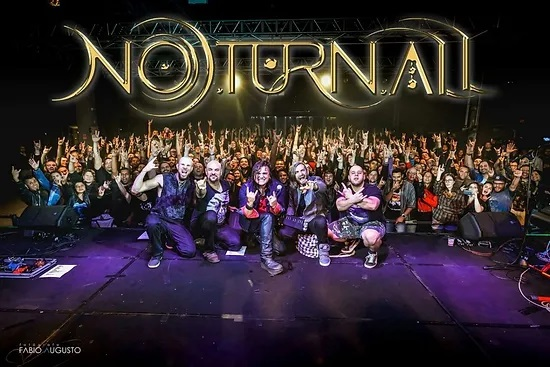

RAFAEL NEGREIROS
Produtor Musical, Compositor e Baterista
Rafael Negreiros nasceu numa pequena cidade do interior de Minas Gerais, chamada São Lourenço.
Começou a tocar bateria com 9 anos de idade, mas somente 10 anos depois, em 2009, conseguiu
sua primeira bateria e a partir daí começou seus estudos e sua carreira musical.
Iniciou os estudos em 2010 com professores locais, e após pouco mais de um ano decidiu
praticar sua maior paixão por conta própria: o pedal duplo.
E paralelo a isso, em 2012 começou a se interessar por produção com instrumentos virtuais e
produzir suas primeiras faixas usando VSTIs: um hobby que acabou virando profissão.
Estudou bateria e produção musical de forma autodidata durante 2 anos até que no final de 2014
decidiu se mudar para São Paulo com o objetivo de imergir no mundo musical com os melhores
professores do país na EM&T (Escola de Música e Tecnologia) e também para adquirir experiência no palco.
Lá teve contato com diversos músicos talentosos. Estudou bateria com o grande professor
Diego Gil, sob coordenação do mestre Giba Favery: um ícone da bateria brasileira.
E paralelo a isso, começou a passar por várias bandas do cenário independente, onde tocou em
diversos festivais musicais incluindo o Sampa Music Festival ao lado de NX Zero e Strike, e também
na Virada Cultural de São Paulo, abrindo para o Dead Fish.
Toda essa trajetória o conduziu até o ápice da sua carreira musical:
Em Setembro de 2017 teve a honra de substituir o grande baterista AQUILES PRIESTER no
show de lançamento do álbum "9", da banda Noturnall (formada por ex-integrantes do Shaman);
Foi o primeiro show sold-out da história da banda, num dos centros culturais
mais conhecidos do Brasil: O SESC Belenzinho.
CLIQUE AQUI PARA ASSISTIR UMA DAS MÚSICAS DESSE SHOW!

Noturnall @ SESC Belenzinho em 01/09/2017 — Foto: Fábio Augusto
Com toda certeza seu objetivo ao escolher se mudar para São Paulo foi cumprido!
Ao final de 2018, encerrou seus estudos na EM&T e voltou para sua cidade natal
Durante esses 4 anos de imersão em São Paulo,
adquiriu ainda mais experiência com a gravação usando
Instrumentos Virtuais, chegando a gravar um álbum inteiro
usando VSTIs em 2019
CLIQUE AQUI PARA OUVIR UMA DAS MÚSICAS DESSE ÁLBUM!

Capa do álbum "Unreal Thoughts", de Rafael Negreiros
Essa foi a prova de fogo para tomar a decisão de compartilhar esse conhecimento com
outros músios e produtores musicais na forma de um curso online chamado "VSTI EXPERTS",
onde ensina seus alunos a trabalhar com Instrumentos Virtuais e gravar músicas realistas usando eles.
O objetivo é ajudá-los a ganhar mais dinheiro com produção musical ou realizar o sonho de gravar
o próprio trabalho autoral com qualidade profissional e sem depender de outros músicos.
Rafael Negreiros tem larga expertise com os seguintes VSTIs:
- V-Metal (Prominy)
- EZDrummer 2 (Toontrack)
- SR5 Rock Bass 2 (Prominy)
- Ample Guitar Luthier (Ample Sound)